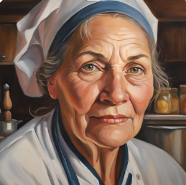

Introduction
Persona 1
Persona 2
Scenario 1
Scenario 2
Storyboard
Moodboard
FlowChart
Wireframes
Persona 1
Persona type: Mother
Name: Sam
Age: 62
Technical comfort: Intermediate
Profession: Michelin Star Chef

Background
Sam reached her peak performance as a chef when she was the young age of 17.
Attended Culinary Institute of America after having saved money from working two full-time jobs.
Loves to spend time with her dog, Macy.
Looking forward to being able to retire in good hands at the age of 65.
Motivations
Sam has been having problems when she is cooking with high heat in the kitchen she owns; her skin in her face gets very dry.
Hoping she could find a quick, professional, and accurate diagnosis of what she could be suffering from.
Frustrations
Having to wait in a room full of people while waiting for her appointment.
Wanted Experience
As fast of an "in and out" type of service.
Accurate diagnosis and honesty if the next step is needed.